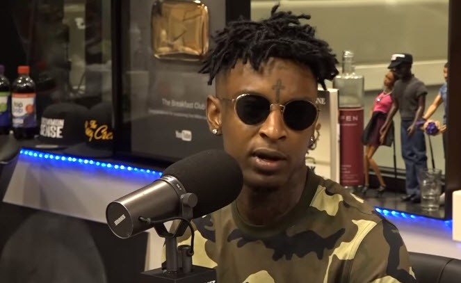
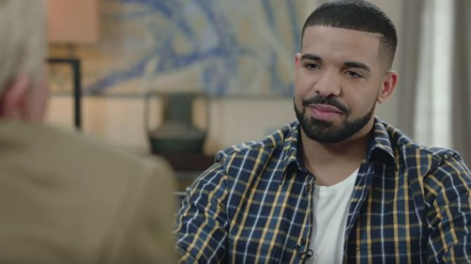
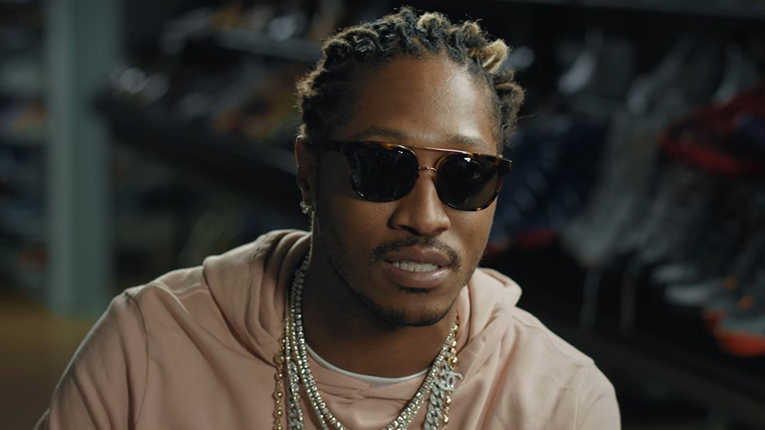
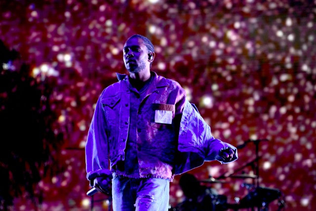
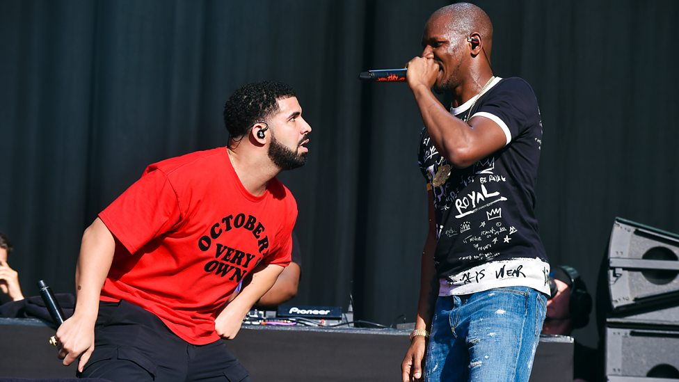

21 Savage no longer wears jewellery?
21 Savage talks about how he has recently stopped wearing jewelery to be a positive influence on the younger generation to show them expensive materialistic things are worth spening on. He said recently that "I want to introduce money management to kids so they have a bright future". 21 also talked about his interest to start investing in houses as it was a better investment saying in an interview to complex that "I see houses as the future area of investment". This seems like a very positive change from 21 and it looks like this is thr first of many changes that he will take on. Other news involves 21 savage possibly releasing a new album which he has not yet mentioned the name of. We .shall see how good it is upon release. Rumors suggest that his new album will be the best to date having multiple features and adapting a new sound of rap.
Drake's OVO brand reaching new levels
Drake talks about how OVO as a brand as grown over the past 5 years. Drake who is still part of Cash Money Records and Universal Music Group said that he feels that his OVO brand has now got into "a confortable place" which he doesn't want it to be in. By this Drake is suggesting that he wants OVO to continuosly grow and not stand still giving his competitors a chance to overtake his brand. We expect OVO to eventually become bigger than brands such as G Unit and Premium Music.
Future on life before music
There was certainly no money or fame for rapper future before music came into the equation thats for sure. In an interveiw with head-top tunes future talks about his time before the music when he had nothing. It certainly saved his life including ours with his ironically futuristic sound, hits like "Tony Montana", "Good Life" and "Before the fame" has shown that.
King Kendrick to win album of the year?
It's the question everyone is asking, will Kendrick Lamar win a grammy? According to the odds he is the favourite. After an unbelievable previous year with the album HUMBLE the artist released his album KING'S DEAD which blew away the rap community at the start of this year. We shall see what the verdict is. Other artists who have also been predicted are Drake, Migos and Travis Scott.
Is giggs taking over the UK scene?
Giggs seems to be the main artist in the UK now. We have seen giggs recent success leading on collaborations with the likes of Drake and 2 Chainz but no one expected giggs to have been dominating as much as he has. With his recent songs such as Swingin in da Whip, Active and KMT giggs is consistenly topping chart. Due to giggs recent success fans are expecting giggs to eventually do a collab album with Drake seeing the appretiation they have for each others sound of music. But anyway from all of us from head-top music we wish giggs the best of luck with his music and to continue representing the UK with his top-flight tunes for our head.